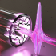
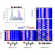

Recent Events
-  "Ultraviolet light source and its application in imaging" 2023.02.07, 10:00 B325 Prof. Dr. Xiaoshi Zhang, CAS, China
-  "Initiating and probing molecular modes of charge migration" 2021.12.09, 10:00 B325 Prof. Dr. Mette Gaarde, LSU
-
 "A route to attosecond science"
2021.09.24, 10:30 B325
Dr. Tran Trung Luu, HKU
"A route to attosecond science"
2021.09.24, 10:30 B325
Dr. Tran Trung Luu, HKU
-
 "Advanced attosecond optical spectroscopy and its application to solid physics"
2021.09.10, 15:00 B325
Dr. Matteo Lucchini, Politecnico di Milano
"Advanced attosecond optical spectroscopy and its application to solid physics"
2021.09.10, 15:00 B325
Dr. Matteo Lucchini, Politecnico di Milano
-
 "Attosecond liquid spectroscopy"
2019.08.20, 14:00 B325
Prof. Dr. Hans Jakob Woerner, ETHzurich
"Attosecond liquid spectroscopy"
2019.08.20, 14:00 B325
Prof. Dr. Hans Jakob Woerner, ETHzurich
Recent publications
Google Scholar，orcid.org/0000-0002-4826-6049
2023
18. Resolving Quantum Interference Black Box through Attosecond Photoionization Spectroscopy，
Wenyu Jiang, Gregory S. J. Armstrong, Lulu Han, Yidan Xu, Zitan Zuo, Jihong Tong, Peifen Lu, Jan Marcus Dahlström, Kiyoshi Ueda, Andrew C. Brown*, Hugo W. van der Hart, Xiaochun Gong*, and Jian Wu*,
Phys. Rev. Lett. 131, 203201 (2023)
https://doi.org/10.1103/PhysRevLett.131.203201
Reported in Phys.org: A method to resolve quantum interference between photoionization pathways with attosecond resolution by Ingrid Fadelli , Phys.org
17. Attosecond delays between dissociative and non-dissociative ionization of polyatomic molecules，
Xiaochun Gong∗, ́Etienne Plesiat, Alicia Palacios, Saijoscha Heck, Fernando Martın∗, Hans Jakob Wörner∗,
Nature Communications, 14, 4402 (2023)
https://doi.org/10.1038/s41467-023-40120-4
2022
16. Probing resonant photoionization time delay by self-referenced molecular attoclock，
Jihong Tong', Xiwang Liu', Wenhui Dong, Wenyu Jiang, Ming Zhu, Yidan Xu, Zitan Zuo, Peifen Lu,
Xiaochun Gong*, Xiaohong Song, Weifeng Yang*, and Jian Wu*,
Phys. Rev. Lett. 129, 173201 (2022)
https://doi.org/10.1103/PhysRevLett.129.173201
15. Two-Center Interference in the Photoionization Delays of Kr2，
Saijoscha Heck, Meng Han, Denis Jelovina, Jia-Bao Ji, Conaill Perry, Xiaochun Gong, Robert Lucchese, Kiyoshi Ueda, and Hans Jakob Wörner,
Phys. Rev. Lett. 129, 133002. (2022)
https://doi.org/10.1103/PhysRevLett.129.133002
14. Atomic partial wave meter by attosecond coincidence metrology,
Wenyu Jiang, Greg S. J. Armstrong, Jihong Tong, Yidan Xu, Zitan Zuo, Junjie Qiang, Peifen Lu, D. D. A. Clarke, Jakub Benda, Avner Fleischer, Hongcheng Ni, Kiyoshi Ueda, Hugo W. van der Hart, Andrew C. Brown*, Xiaochun Gong*, Jian Wu*,
Nature Communications, 13, 5072 (2022). (Open access)
https://doi.org/10.1038/s41467-022-32753-8
13. Attosecond spectroscopy of size-resolved water clusters ,
Xiaochun Gong', Saijoscha Heck', Denis Jelovina, Connel Perry, Kristina Zinchenko, Robert Lucchese, Hans Jakob Wörner*,
Nature 609, 507-511 (2022）.
Selected as "Accelerated Article Preview"
https://doi.org/10.1038/s41586-022-05039-8
12. Attosecond Photoionization Dynamics: from Molecules over Clusters to the Liquid Phase，
Xiaochun Gong*, Inga Jordan, Martin Huppert, Saijoscha Heck, Denitsa Baykusheva, Denis Jelovina, Axel Schild and Hans Jakob Wörner*,
CHIMIA, 76, 520-528 (2022). (Review Article)
https://doi.org/10.2533/chimia.2022.520
Cover Letter in Chimia Vol. 76 No. 6 (2022): Frontiers in Ultrafast Spectroscopy and Dynamics
11. Asymmetric attosecond photoionization in molecular shape resonance,
X. Gong, W. Jiang, J. Tong, J. Qiang, P. Lu, H. Ni*, R. Lucchese, K. Ueda*, J. Wu*,
Physical Review X, 12, 011002 (2022).
https://doi.org/10.1103/PhysRevX.12.011002
2021
10. Attosecond Interferometry of Shape Resonances in the Recoil Frame of CF4,
S. Heck, D. Baykusheva*, M. Han, J.-B. Ji, C. Perry, X. Gong and H. J. Wörner*,
Science Advances 7, eabj8121 (2021).
https://doi.org/10.1126/sciadv.abj8121
* Attosecond spectroscopy of size-resolved water clusters,
X. Gong', S. Heck', D. Jelovina, C.Perry, K. Zinchenko, H.J. Wörner*, arxiv preprint (2021)
2019
9. Observation of photon-nucleus angular-momentum transfer in the strong-field breaking of molecules,
X. Gong, P. He, J. Ma, W. Zhang, F. Sun, Q. Ji, K. Lin, H. Li, J. Qiang, P. Lu, H. Li, H. Zeng, J. Wu*, and F. He*,
Physical Review A 99, 063407 (2019).
2017
8. Ellipticity dependent symmetric break of doubly ionized acetylene in strong laser fields,
X. Gong*, H. Li, P. Lu, Q. Song, Q. Ji, K. Lin, W. Zhang, J. Ma, H. -X. Li, H. Zeng and J. Wu,
Journal of Optics 19, 124008 (2017).
7. Energy-resolved attosecond delays of photoelectron emission in multiphoton above threshold ionizations，
X. Gong, C. Lin, Q. Song, Kang Lin, Q. Ji, W. Zhang, J. Ma, P. Lu, H. Zeng, F. He, W. Yang*, and J. Wu*,
Phys. Rev. Lett. 118, 143203 (2017).
2016
6. Pathway-resolved photoelectron emission in dissociative ionization of molecules,
X. Gong, P. He, Q. Song, Q. Ji, K. Lin, W. Zhang, P. Lu, H. Pan, J. Ding, H. Zeng, F. He*, and J. Wu*,
Optica 3, 643 (2016).
2015
5. Channel-Resolved Above-Threshold Double Ionization of Acetylene,
X. Gong, Q. Song, Q. Ji, K. Lin, H. Pan, J. Ding, H. Zeng, and J. Wu*,
Physical Review Letter 114, 163001 (2015).
2014
4. Two-dimensional directional proton emission in dissociative ionization of H2,
X. Gong, P. He, Q. Song, Q. Ji, H. Pan, J. Ding, F. He*, H. Zeng, J. Wu*,
Physical Review Letter 113, 203001 (2014) Editors’ Suggestion.
3. Strong field dissociative double ionization of acetylene,
X. Gong, Q. Song, Q. Ji, H. Pan, J. Ding, J. Wu*, and H. Zeng,
Physical Review Letter 112, 243001 (2014).
2. Multielectron effects in strong-field dissociative ionization of molecules,
X. Gong, M. Kunitski, K. J. Betsch, Q. Song, L. Ph. H. Schmidt, T. Jahnke, Nora G. Kling, O. Herrwerth, B. Bergues, A. Senftleben, J. Ullrich, R. Moshammer, G. G. Paulus, I. Ben-Itzhak, M. Lezius, M. F. Kling, H. Zeng, R. R. Jones, and J. Wu*,
Physical Review A 89, 043429 (2014).
2013
1. Simultaneous probing of geometry and electronic orbital of ArCO by Coulomb-explosion imaging and angle-dependent tunneling rates,
X. Gong, M. Kunitski, L. Ph. H. Schmidt, T. Jahnke, A. Czasch, R. Dörner, and J. Wu*,
Physical Review A 88, 013422 (2013).